MORTAL
FUTBOL
Every season ends in tears.
Usually someone else's.
A football game where goals are secondary. The real game is taking opponents out — claim victims, bank Injury Points, and win the match by murder or by football. Like Carmageddon was a racing game you win by killing.
THE MATCH
01[X] CLAIM R1 SPRINT L1 SWITCH
THE HOOK
It plays like ISS Pro 98 — buffering, through balls, first-time shots, curling. But every tackle is a weapon. Land one wrong and the victim goes down.
The match is the frame. The game underneath is the hunt.
THE CLAIM
02Out for the match. Stretcher inbound.
+200
YOU HAVE TO GO GET THEM
Points only bank when you physically claim the body — before the medics take it. Rivals can steal the claim. Headshots, from-behind hits and taking out a star player pay more.
Combo multipliers chain claims. A clean sheet of bodies is worth more than a clean sheet of goals.
PRESENTATION
03MORTAL
FUTBOL
THE SCORE
04MURDER
VICTORY
DUAL VICTORY
Win on goals. Win on murder. Or win by taking out all 11 — instant match win. The player chooses every match whether to play football, kill, or both.
That choice is the whole game.
EVERYTHING WRONG ABOUT FOOTBALL
05The satire is the game, not a skin on it. Each pillar is a mechanic you play.
DIVING / SIMULATION
Button to dive. Ref either buys it — opponent carded — or books you. Risk your reputation for an edge.
CORRUPTION
Spend Injury Points to bribe the ref. Soft penalties, look-away fouls, a VAR that always sides with the money.
DARK ARTS
Shirt-pulling, studs-up, the tactical foul — take a card to stop a breakaway. Every rule is a weapon.
AGENT DRAMA
At half-time the other side's agent can poach your star. Loyalty is a price, not a value.
TIME-WASTING
Keeper holds the ball. Corner-flag hugging. Deny the opponent, bank the clock.
GASLIGHTING
Commentary calls your murder "a strong, fair challenge — play on" and your legit goal "controversial".
FATIGUE
Tired players are slower and injury-prone. Mismanage fitness and you gift the other side victims.
FAKE INJURIES
Clutch your leg to waste time or draw a card. The line between hurt and acting is yours to blur.
THE LOOK
06Authentic PSX-era rendering — not a filter, a real renderer. Affine texture warping, vertex snapping, dithering, fog, blob shadows, a 320×240 internal buffer upscaled with nearest-neighbour. It looks like 1998 because it renders like 1998.
PC first (Windows). Android port in the roadmap. Custom MonoGame engine, custom physics, fully deterministic and testable.
PROGRESS
07Live dev screenshots — captured from real builds, not mockups. Update as each milestone lands.
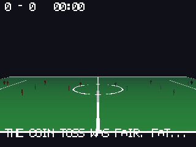
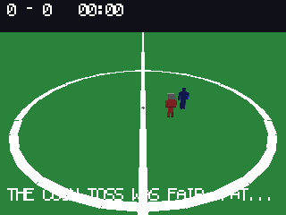
M5.3 · Commentaire — the stadium voice
Text today, not voice — the seeded line engine is live in the build (Commentary, 48 lines across 8 events, deterministic per match seed). TTS is a later milestone: audio isn't in the engine yet. Real outputs from the committed code:
- Kickoff — "And we begin. Grass, ambition, and a dubious whistle."
- Injury — "Bone met stud. Stud won. Player naps. Claim ignored. Insurance cites rules."
- Injury — "His leg says no. Play says go. Leg loses. Fate claims him. The account is closed."
- Goal — "Goal numero deux. The corner flag trembles in fear."
- Goal — "The ball caresses the net. The net cannot complain."
- Foul — "Foul! The tackle was exquisite. The victim dissents loudly."
- Half-time — "Mi-temps! The stall sells out of heart medication."
- Full-time — "The whistle ends it at 2. The pigeons file a complaint."
- Injury-point win — "Unbelievable! The walking wounded collect the silverware."
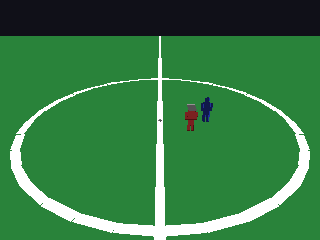
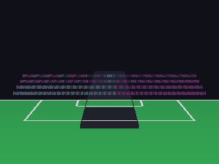
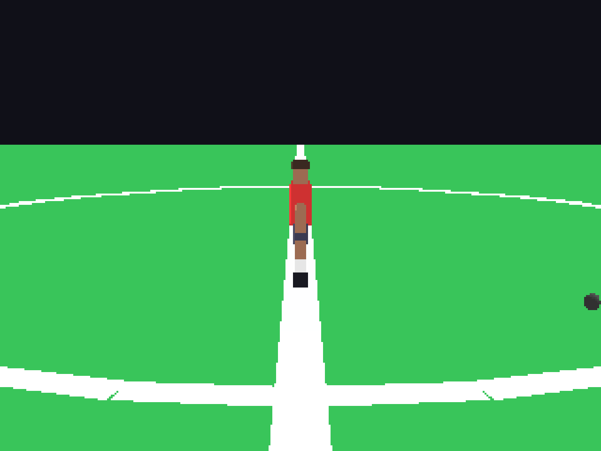
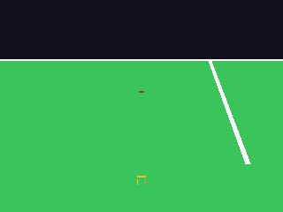
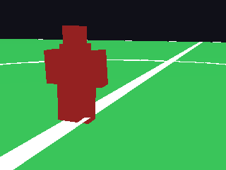
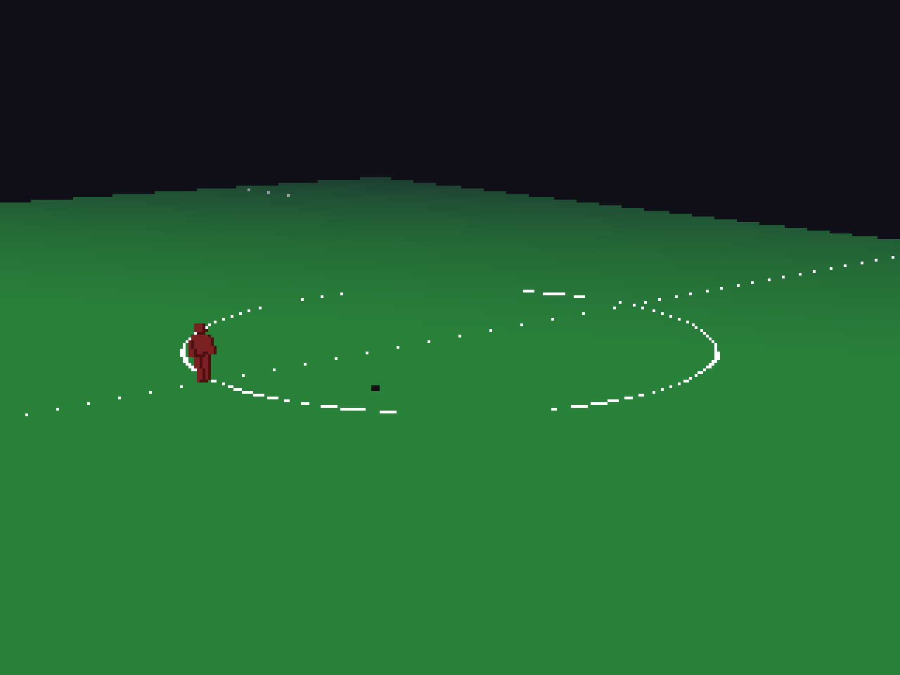
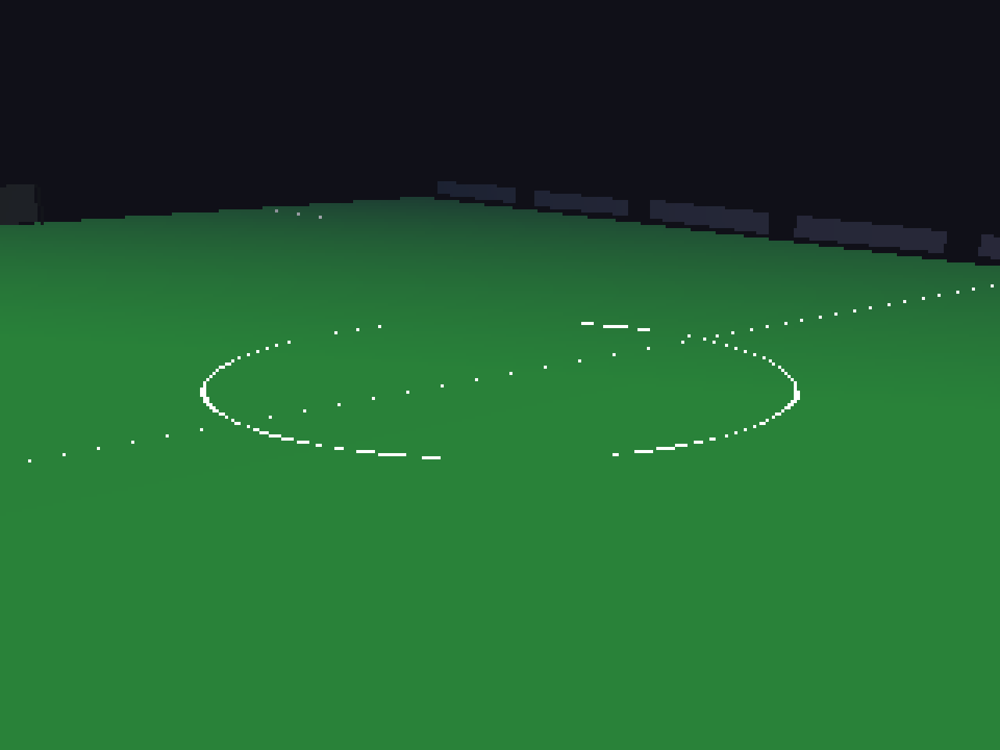
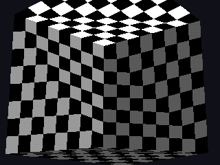
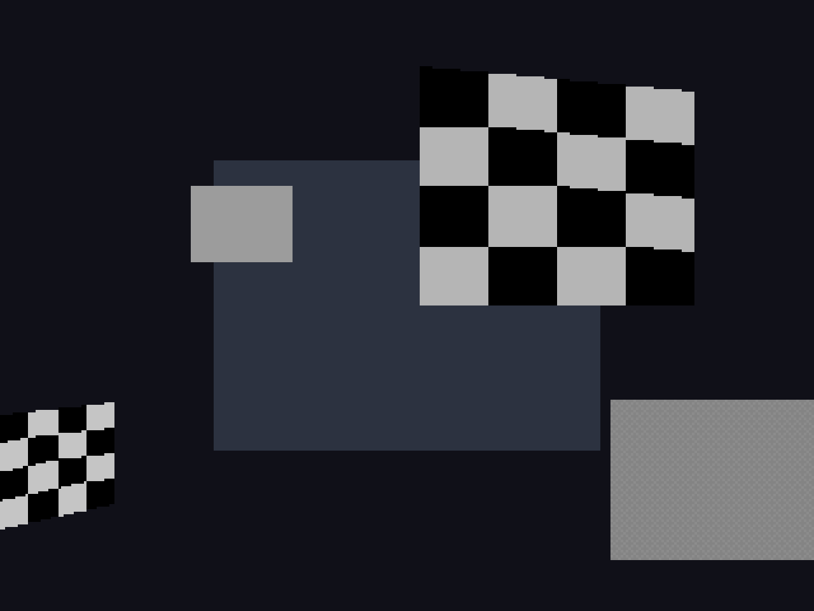